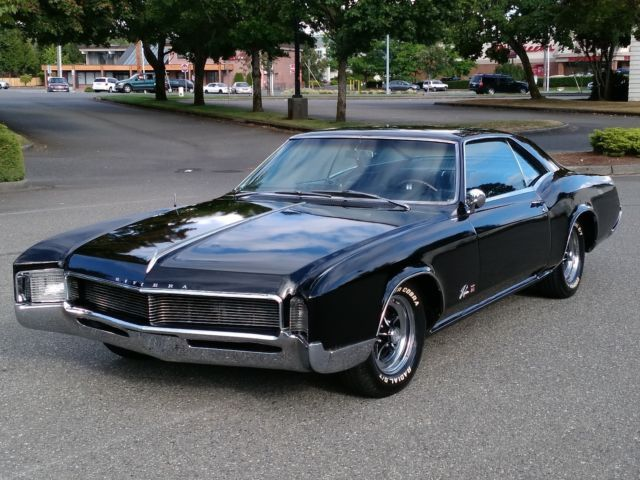
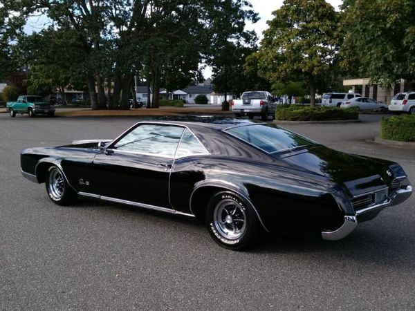

В 1966-м начался выпуск второго поколения Riviera. [Скрытые фары остались и на Riviera 1966 года, прошедшей редизайн и представлявшей собой совершенно новую машину:]
Машину полностью обновили, сделав ее формы более плавными и криволинейными. Теперь она имела общий кузов с Oldsmobile Toronado, но общей была только внутренняя структура кузова, а внешние панели, облицовки, и cоответcтвенно общий вид, различались между собою очень сильно.
Riviera представляла собой большое приземистое купе с покатым веpхом (типа fastback), без центральных стоек и передком с выступающими передними крыльями. Второе поколение получило удлиненную колесную базу и намного более массивный двухдверный кузов купе. Продажи выросли до 45 тыс. штук. В 1967-м году на Riviera перестали ставить 425-е двигатели и предлагали новые 430-кубовые, которые были покладистей, надёжней и выдавали те же 360 «лошадок».
HP
N*m
АКПП
 В конце 1950-х GM не хватало личного роскошного автомобиля, который мог бы конкурировать с очень успешным Ford Thunderbird - двухдверным автомобилем с уникальным стилем, популярность которого резко возросла, когда он превратился из двухместного автомобиля в четырехместный. Чтобы восполнить этот пробел, был создан экспериментальный дизайн Cadillac XP-715 , получивший название «LaSalle» в честь бывшей роскошной марки GM.
Сообщается, что его угловатый вид был вдохновлен визитом главного стилиста GM Билла Митчелла в Лондон в тот период, когда он был поражен видом автомобиля Rolls Royce с нестандартным кузовом.. Позже он сказал, что стиль «острие ножа» - это то, что он хотел от новой модели, но с более низким профилем. Сам дизайн был написан стилистом Недом Никлзом.
 Когда в 1960 году компания Cadillac перешла к проекту, проект был выставлен на конкурс со стороны других подразделений GM. Buick, отчаянно пытаясь оживить падение продаж, выиграл конкурс, заручившись помощью рекламного агентства McCann-Erickson для создания своей презентации. Первоначально называвшиеся «Buick LaSalle», а затем «Buick Riviera» концепт-кары, законченный дизайн был адаптирован к укороченной версии существующей крестообразной рамы Buick. Он был снова представлен как концепт-кар в 1963 году под названием Buick Riviera Silver Arrow.
В 1959 году Buick стал более избирательно применять название Riviera. С тех пор и до 1962 года он использовался только для обозначения стильной жесткой крыши с шестью окнами премиум-класса, которую он изначально разделял исключительно с Cadillac (Oldsmobile 98 получил его в 1961 году) и был доступен только на Electra 225 . Последнее использование термина Riviera для описания уровня роскошной отделки салона было в 1963 году, как официальное обозначение четырехдверной жесткой крыши # 4829 Electra 225 Riviera, в том же году дебютировало двухдверное купе Riviera с жесткой крышей модели E-body.